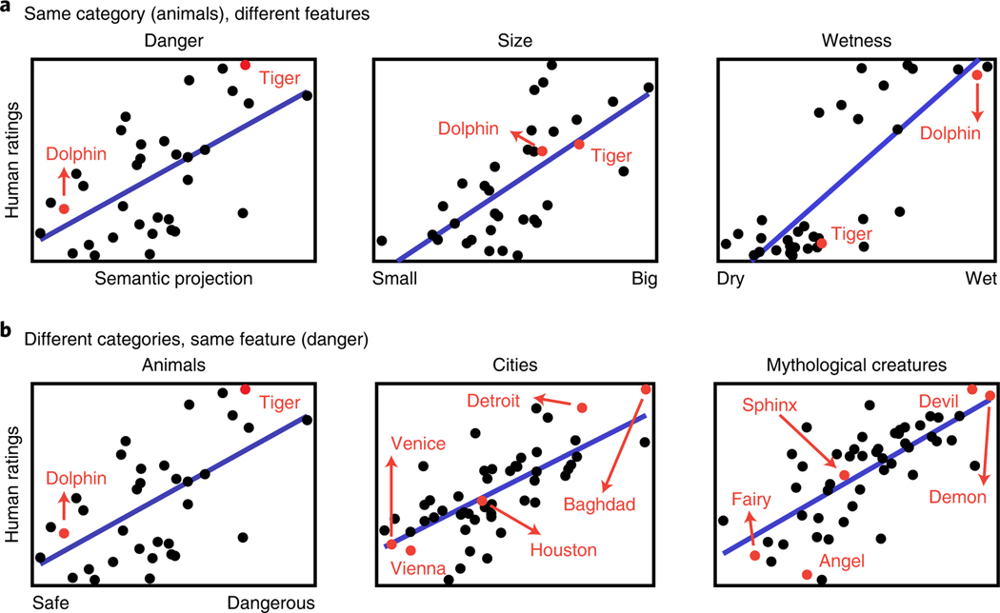

Word2Vecが人文・社会科学研究における応用#
The Geometry of Culture: Analyzing the Meanings of Class through Word Embeddings [Kozlowski et al., 2019]#
問題関心#
「階層」という概念は多次元な側面より構成されています
Affluence
Occupation
Symbolic Manifestations(social honor and prestige)
Gender
「階層」という概念は時間とともに変化しています
方法#

Cultural Dimensionsの測定#
Cultural Dimensionsの測定は、単語分散表現を用いて類推問題を解決する能力を活用しています。
文化的な概念を反映する単語のペア間のベクトル計算でCultural Dimensionsを測定することが可能です(\(A\))。
\(\vec{male}-\vec{female}\)は\(Gender\)という概念反映しています。同じロジックで、\(\vec{king}-\vec{queen}\)のような単語のペアも\(Gender\)という概念を反映できると考えられます。
\(\vec{rich}-\vec{poor}\)、\(\vec{affluence}-\vec{poverty}\)のような単語のペアは\(Affluence\)という概念を反映できると考えられます。
import gensim.downloader
model = gensim.downloader.load('word2vec-google-news-300')
rich_list=["rich","richer","affluence","luxury"]
poor_list=["poor","poorer","poverty","cheap"]
import numpy as np
affluence_vec=[]
for i,j in zip(rich_list,poor_list):
affluence_vec.append(model[i]-model[j])
affluence_vec=np.array(affluence_vec)
affluence_vec=np.mean(affluence_vec,axis=0)
なぜ複数の単語ペアで計算する必要がありますか？
単語ペアでベクトル減法を行なって、結果の平均を取る方法以外、Dimensionsを測定する方法がありますか？
Cultural Dimensionsで概念の「理解」#
ある単語を「Cultural Dimensions」でどのように解釈されるかを、その単語のベクトルと文化的次元ベクトルとの間の角度を計算することで求めるのです。(\(B\))
この角度が小さいほど、その単語はその文化的次元に強く関連していると言えます。この方法により、単語が持つ文化的な意味合いやニュアンスを数値的に分析することが可能になります。
def get_consine(vector, dimension):
"""
Calculate the angle between the vector and the given dimension
"""
v_dot_d = np.dot(vector, dimension)
v_d = np.linalg.norm(vector) * np.linalg.norm(dimension)
return v_dot_d / v_d
get_consine(model["tennis"],affluence_vec)
0.10311404
from sklearn.metrics.pairwise import cosine_similarity
cosine_similarity(model["tennis"].reshape(1,-1),affluence_vec.reshape(1,-1))
array([[0.10311405]], dtype=float32)
def get_angle(vector, dimension,degree=False):
"""
Calculate the angle between the vector and the given dimension
"""
c = get_consine(vector, dimension)
if degree:
return np.degrees(np.arccos(np.clip(c, -1, 1)))
else:
return np.arccos(np.clip(c, -1, 1)) #return radian
sports=["tennis","soccer","basketball","boxing","golf","swimming","volleyball","camping","weightlifting","hiking","hockey"]
for sport in sports:
print(sport,get_angle(model[sport],affluence_vec,degree=True))
tennis 84.08148088988168
soccer 86.44827879084316
basketball 87.49476268241891
boxing 96.19771983578752
golf 81.23037992187086
swimming 87.66950350249786
volleyball 84.87990835557244
camping 92.64046883432938
weightlifting 92.84652219656257
hiking 89.06679353599412
hockey 88.23169120649816
この結果をどのように解釈すべきですか？
性別に関するDimensionを作成しなさい
性別Dimensionで運動の位置付けを確認し、その結果を解釈しなさい
Class意味の推移#
階層という概念は多次元な側面より構成されて、さらにその構成は時間とともに変化している。
Cultural Dimensionsを構築することで、「階層」の各構成の「意味」を定量的に測定する
「Affluence」が他の要素とどのように関係していることは、階層の意味構成を説明している
def create_vector(word_pair):
vec=[]
for i in word_pair:
vec.append(model[i[0]]-model[i[1]])
vec=np.array(vec)
vec=np.mean(vec,axis=0)
return vec
education_pair=[("educated","uneducated"),("learned","unlearned"),("taught","untaught"),
("schooled","unschooled"),("trained","untrained"),("lettered","unlettered"),
("tutored","untutored"),("literate","illiterate")]
education_vec=create_vector(education_pair)
gender_pair=[("man","woman"),("men","women"),("he","she"),("him","her"),
("his","her"),("boy","girl"),("male","female"),("masculine","feminine")]
gender_vec=create_vector(gender_pair)
cosine_similarity(gender_vec.reshape(1,-1),affluence_vec.reshape(1,-1))
array([[-0.04156307]], dtype=float32)
cosine_similarity(education_vec.reshape(1,-1),affluence_vec.reshape(1,-1))
array([[0.20605]], dtype=float32)
この結果をどのように解釈すべきですか？
言語モデルは学習コーパスに含まれている「バイアス」をそのまま反映しています。例えば、言語モデルでは、エンジニア、トラック運転手は男性、モデル、看護師は女性というような、職業と性別の関係についての典型的なステレオタイプを学習していることがわかります。
同様に、異なる時期のコーパスには、特定な時期の考え方や認識に関する情報が含められますので、そのコーパスで学習した言語モデルも特定な時期の考え方や認識を反映できると考えられます。

この図の結果をどのように解釈すべきですか？
Word2Vecを応用する研究#
Semantic projection recovers rich human knowledge of multiple object features from word embeddings [Grand et al., 2022]#
単語分散表現は表出する意味的特徴が人間の評価を近似することができることを体系的に説明しました。

Word embeddings quantify 100 years of gender and ethnic stereotypes [Garg et al., 2018]#
単語分散表現が、性別ステレオタイプと民族マイノリティに対する態度の変化を定量化するのにどのように役立つかを示しています。
性別と民族に関する単語で、形容詞や職業などの中立的な単語(neutral words )と比較する手法
性別(男性、女性)と職業に関連する単語リストをまとめます
女性を代表する単語（例：she, female）と職業の単語（例：teacher, lawyer）との間の平均埋め込み距離を計算します
男性を代表する単語と同じ職業の単語との平均埋め込み距離も計算します
女性の平均距離から男性の平均距離を引く結果は「性別バイアス」と考えます。\(\to\) 値がマイナスの場合、該当する職業は男性とより密接に関連付けていることを意味しています

「engineer」、「nurse」、「housekeeper」の\(Gender Bias\)を計算しなさい
Norm distanceはNumpyを使って実装できます
\(Ethnic Bias\)はどのように計算すべきのかを考えなさい。Ethnicのグループでは\(2\)以上であることを注意してください。